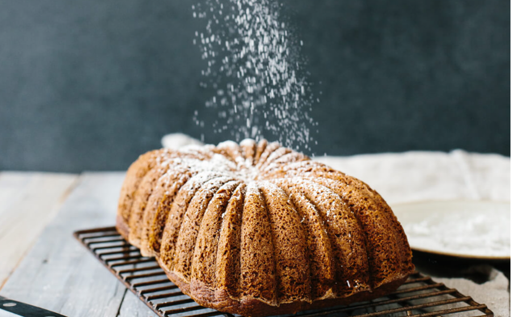

Paleo Pumpkin Bread

This Paleo Pumpkin Bread recipe is a staple for the holidays. It’s gluten-free, dairy-free, extremely moist, deliciously spiced and smells amazing coming out of the oven. It’s a one-bowl, no-fail recipe that you’ll make again and again.
I rarely have recipes turn out perfect on first attempt, but this paleo pumpkin bread recipe did just that. The base on this paleo pumpkin bread recipe – almond flour, tapioca flour, baking soda, salt, butter (or coconut oil) and vanilla extract.
But instead of mashed bananas we’ll used organic canned pumpkin and instead of honey we’ll use maple syrup. Then, we’ll add a good amount of pumpkin spice and call it a day.
The best part about this recipe is that it only takes one bowl. Just add all the ingredients into a mixing bowl and use a hand mixer to quickly blend everything together. Pour it into your loaf pan (you can get fancy with this loaf pan) and place it in the oven. Super easy.
When it comes out of the oven your kitchen will smell divine. And needless to say, it’s the perfect breakfast bread to serve up for Thanksgiving. Or any fall weekend.
I top my Paleo Pumpkin Bread with a little sprinkle of homemade powdered sugar to finish it off, but that step is purely optional.
Lastly, I’d recommend serving it up alongside some freshly brewed coffee!
Enjoy and happy holidays!
This paleo pumpkin bread recipe is a staple for the holidays. It’s gluten-free, dairy-free, extremely moist, deliciously spiced and smells amazing.PALEO PUMPKIN BREAD
With a handful of simple ingredients you can make this paleo pumpkin bread recipe easily in one bowl. It comes out deliciously perfect every time.
INGREDIENTS
- 2 cups almond flour
- 1/2 cup tapioca flour
- 1 1/2 tbsp pumpkin spice
- 1 tsp baking soda
- 1/4 tsp salt
- 2 large eggs
- 1 cup organic pumpkin puree
- 1/4 cup butter or coconut oil
- 1/3 cup maple syrup
- 1 tsp vanilla extract
DIRECTIONS
- Preheat your oven to 350 degrees fahrenheit. Grease a loaf pan and line with parchment paper. If using a special loaf pan (as I am), see notes below.
- Add all ingredients to a mixing bowl and blend together with a hand mixer on medium speed until just combined.
- Pour the batter into your loaf pan and cook for 50-60 minutes or until a toothpick comes out clean.
If using a fancy mold pan, tap it on the counter a few times to remove all air bubbles as well, to ensure the mold details show through.
NUTRITION INFORMATION
Yield: 1 loaf, Serving Size: 1 slice
- Amount Per Serving:
- Calories: 242
- Total Fat: 17g
- Saturated Fat: 4g
- Cholesterol: 49.5mg
- Sodium: 17.7mg
- Carbohydrates: 18.7g
- Fiber: 3g
- Sugar: 3.5g
- Protein: 6.2g
1 comment from the original site
Forbes Riley · October 20, 2018